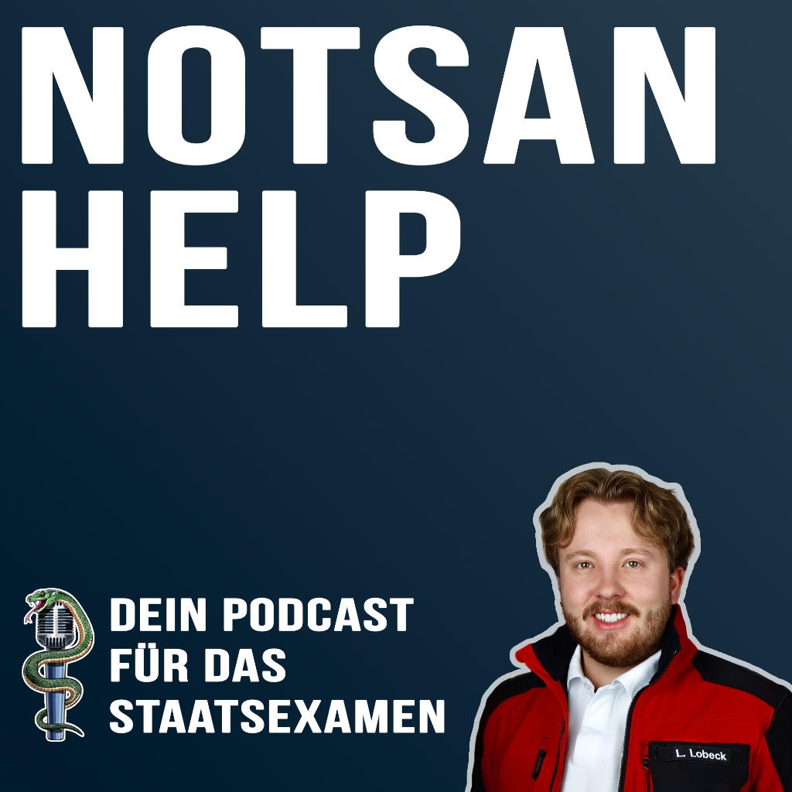

NOTSAN-HELP • 11 Episoden
Dein Podcast für das Notfallsanitäter-Staatsexamen.
Hast Du Lust, notfallmedizinische Themen auditiv zu verstehen und zu lernen? Kompaktes, fachlich fundiertes Wissen direkt auf die Ohren – für den Weg zum Dienst, beim Sport oder entspannt zu Hause.
